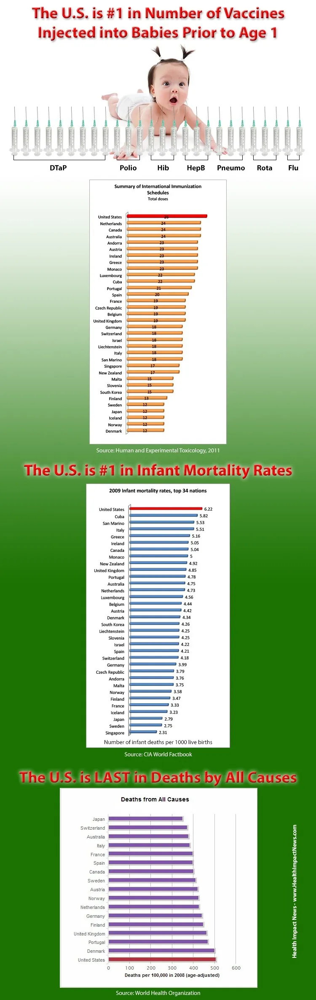
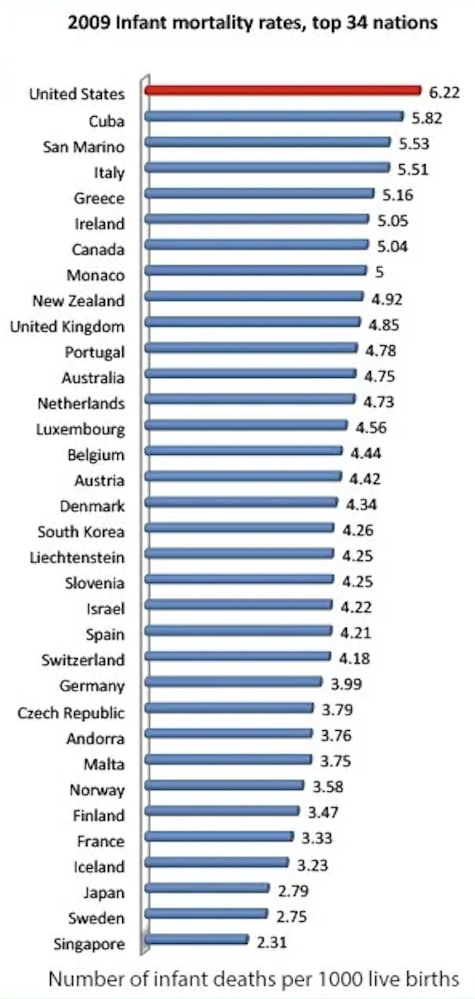
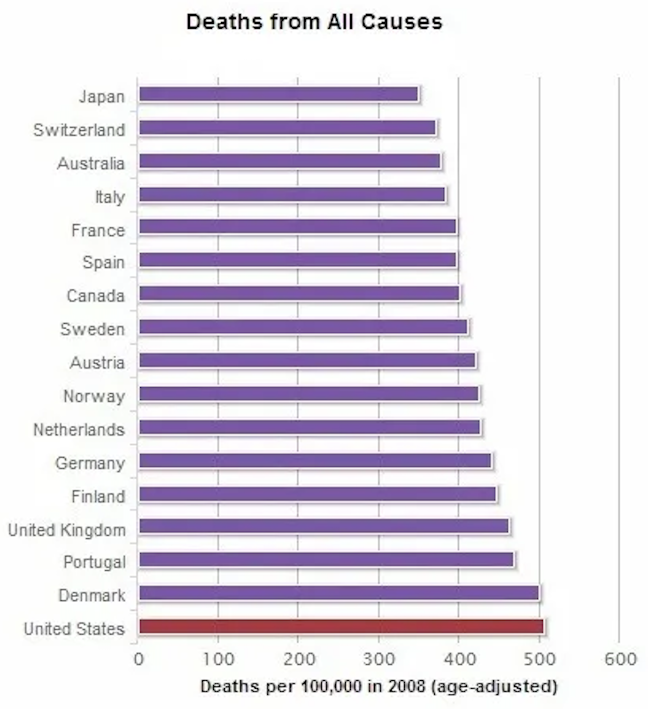
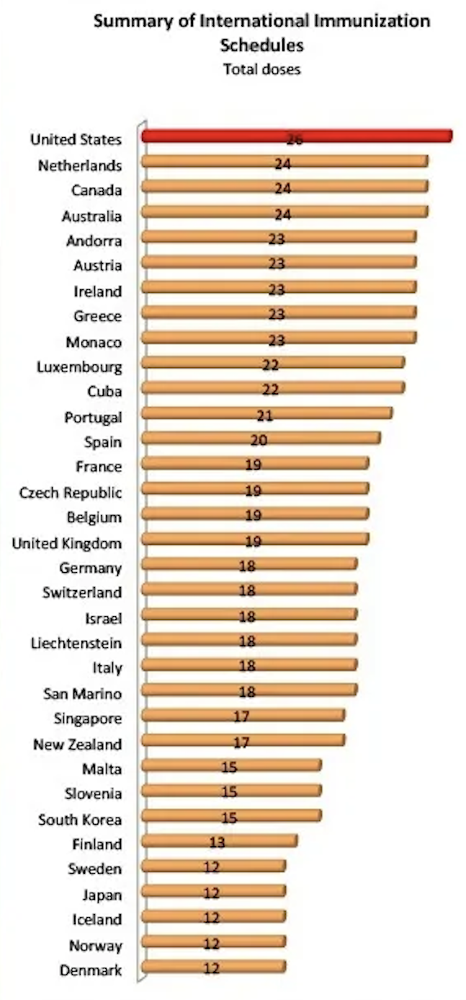
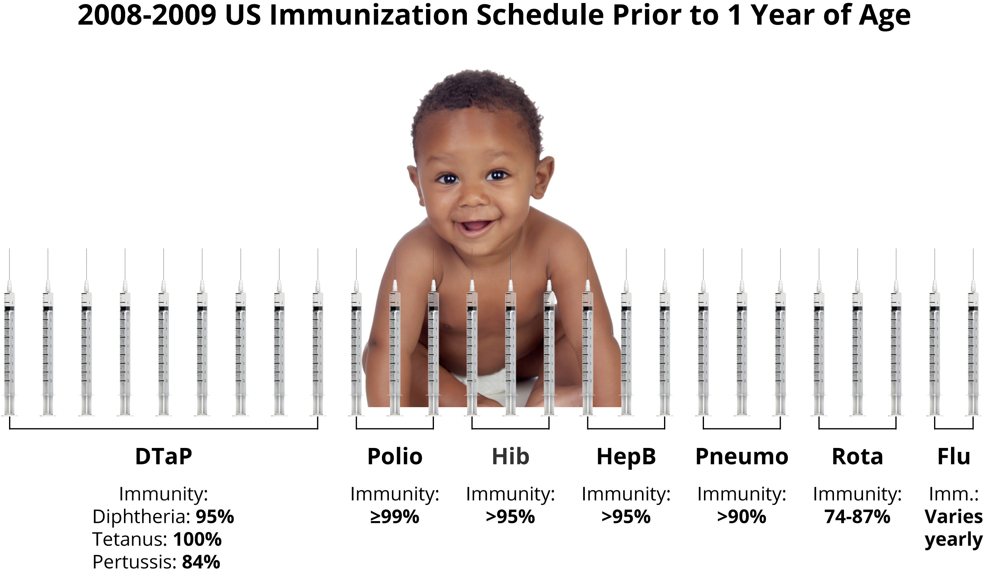

by Jean Cheng
Recently, I came across an anti-vax data story from 2013 titled Is There Any Logic Behind Vaccine Claims? by Brian Shilhavy. Using misleading visualizations, Shilhavy argues that vaccinations are largely responsible for infant deaths in the US. He begins with the following infographic and caption:

Shilhavy posits that the US has high infant mortality but low overall mortality. Since the US administers the most vaccines to infants than any other country, he concludes that vaccines are what's killing babies, as other factors would have been reflected in the overal mortality. At first glance, everything seems logically sound, even if one doesn't agree with anti-vax ideas.
Let's first investigate his claim about the US having the highest infant mortality rates (IMR), though. The visualization I've created on the right uses slightly newer 2014 data from the CIA World Factbook 2015 (which reports on the previous year) instead of the 2009 World Factbook data that Shilhavy uses. The official Factbook was just recently shut down, so 2014 was the earliest well-organized data that I could get from the Wayback Machine. But why was Shilhavy even using 2009 data in 2013, considering the 2012 World Factbook data was readily available at the time?

Wow! So looks like the US is #1! Out of... the lowest 56? So it's #169 out of 224? While I would still say 169th means we have a lot of room for improvement, it's definitely not the alarmingly high #1 out of 224. Shilhavy creates this illusion by conveniently cutting off the data points right above the US instead of showing the whole picture. This distorts the viewer's sense of scale and comparison with other countries, kind of like an Asian mom who only compares you with those better than you. He also says in his graph title that it depicts the "top 34 nations." However, it's actually the top 34 nations with the lowest IMR, a.k.a. the bottom 34. You could say that, by "top", he means the nations that are doing the best in terms of low IMR. But then his claim of the US being #1 makes no sense because the US would then be the lowest of the top 34.
Next, we'll take a look at overall death using the same CIA World Factbook 2015 data.

Shilhavy says the US is last in deaths. So the US has the lowest death rate out of all countries? Actually, no! For this graph, he not only reuses the same zooming-in tactic as before but also adds on another trick: flipping the y-axis. The other two graphs in the infographic placed the highest value at the top, but this one puts it at the bottom. Shilhavy further hides this change by removing the values on each bar and instead opting for less noticeable tick marks in lighter font at the bottom. The average, busy reader—who doesn't stop to study every visual feature in detail—may not pick up on this unexpected change. They are misled into accepting his claim that the US is ranked last in deaths when, in reality, they are 94th highest out of 225.
Thirdly, Shilhavy asserts that the US administers the most vaccines to infants. He draws from the 2008-2009 immunization schedules in Human & Experimental Toxicology for his graph. Contrary to its title, "Summary of International Immunization Schedules," the dataset does not provide an objective international summary as it includes only the 34 countries with an IMR less than or equal to the US. Therefore, the set of countries is somewhat arbitrary. I was unfortunately unable to find a usable dataset on the topic, so my visualization uses this same data. You can also see the exact counts of each vaccine type by hovering over any bar. Note that each shot of DTaP contains 3 separate vaccines (for diphtheria, tetanus, and pertussis), so each DTaP dose actually counts as 3 vaccine doses.

Like previously mentioned, the US being #1 here means very little when only 34 countries were represented in the data. At the very least, we can conclude that the US administers more infant vaccines than the 33 countries with the lowest IMRs. I also noticed that, after I manually summed each dose, the original dataset appeared to miscount Belgium's vaccine total as 19 instead of 20. I was certainly not expecting to find a basic aritmetic error in a published paper.
Let's also revisit Shilhavy's "scary" baby vaccine visualization. This time, we'll make it actually informative by adding immunity information from the Institute for Vaccine Safety. The immunity percentages tell us how much each vaccine lowers the risk of infection in children who have completed the entire vaccine series. However, this includes doses taken during early childhood after 1 year of age. I could not locate a dataset detailing the effects of vaccines doses only administered before 1 year of age, but the effectiveness of each vaccine relies on its series starting during infancy, so I still felt this data was significant enough to include. As for the images in my visualization, the baby is from NicePNG and the syringe is from Pixabay.

As shown in my visualization, the administration of these many vaccines on infants has a significant positive impact on their health. They are highly effective at protecting children from fatal diseases. Also, I personally feel that using needles to represent vaccine doses is not the most fitting when it comes to DTaP, as each singular needle shot contains 3 vaccines and is therefore represented with 3 needles. This makes the 3 DTaP shots look like 9. I couldn't think of a better vaccine icon, though, so I did not address this issue.
All in all, for such a rich country, the US unfortunately ranks higher than it should in both infant death (169th highest) and general death (94th highest) out of 224-225 nations. However, the important thing to note is that the infant death ranking is significantly lower than the one for general death. American infants die less often compared to other countries than the overall American population, and the US administers a greater number of infant vaccines than the 33 countries with the lowest IMRs. This suggests that vaccines may improve the chances of infant survival. I won't stoop to Shilhavy's level and say that correlation definitely means causation, but I do think his argument that vaccines cause infant deaths is unfounded and highly unlikely. Nevertheless, I will defer to the actual research and resulting claims of reputable institutions such as the Institute for Vaccine Safety and the CDC, an act that Shilhavy calls in his article "simply an appeal to authority and not logical." If the purpose of vaccination is to improve health, the general trends appear as if vaccination improves health, and reputably-sourced research that is rigorous, systematic, and evidence-based shows that vaccination improves health, I think choosing to reject these claims and actively manipulating others into doing so as well is the truly illogical course of action in this case.
I used GPT-5.3 to assist with debugging and to supplement official documentation for learning about D3 features.